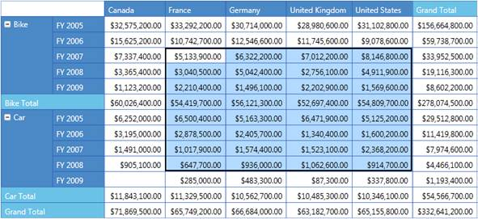

PivotGrid for Silverlight supports Cell Selection as in Microsoft Excel where you can select Grid value cells. When a cell is selected an event called PivotGridSelectionChanged will be triggered and PivotGridSelectionChangedEventArgs will return an IEnumerable collection of columns, rows, and values for the selected cell. Also, EventArgs will return the CellRange and the reason for selection, such as mousedown, mousemove, mouseup etc.
Adding Cell Selection
You can create a PivotGrid and specify a Cell Selection, as shown in the following code snippets.
|
[XAML] <!--Adding PivotGridControl and enabling Cell Selection.--> <syncfusion:PivotGridControl AllowSelection="True"> </syncfusion:PivotGridControl>
|
|
[C#] this.pivotGrid1.ItemSource = ProductSales.GetSalesData(); // Adding Pivot Columns. this.pivotGrid1.PivotColumns.Add(new PivotItem() { FieldMappingName = "Country", TotalHeader = "Total" }); // Adding Pivot Rows. this.pivotGrid1.PivotRows.Add(new PivotItem() { FieldMappingName = "Product", TotalHeader = "Total" }); this.pivotGrid1.PivotRows.Add(new PivotItem() { FieldMappingName = "Date", TotalHeader = "Total" }); // Adding Pivot Calculations. this.pivotGrid1.PivotCalculations.Add(new PivotComputationInfo() { FieldName = "Amount", SummaryType = SummaryType.DoubleTotalSum, CalculationName = "DoubleTotalSum", Format = "C" }); // Enable Cell Selection. this.pivotGrid1.AllowSelection = true; this.pivotGrid1.Refresh();
|
|
[VB]
' Specifying the ItemSource for Pivot Grid. Me.PivotGridControl1.ItemSource = ProductSales.GetSalesData() ' Adding Pivot Rows to Grid. Me.PivotGridControl1.PivotRows.Add(New PivotItem With {.FieldMappingName = "Product", .TotalHeader = "Total"}) Me.PivotGridControl1.PivotRows.Add(New PivotItem With {.FieldMappingName = "Year", .TotalHeader = "Total"}) ' Adding Pivot Colums to Grid. Me.PivotGridControl1.PivotColumns.Add(New PivotItem With {.FieldMappingName = "Country", .TotalHeader = "Total"}) Me.PivotGridControl1.PivotColumns.Add(New PivotItem With {.FieldMappingName = "State", .TotalHeader = "Total"}) ' Adding PivotCalculations to Grid. Me.PivotGridControl1.PivotCalculations.Add(New PivotComputationInfo With {.FieldName = "Amount", .Format="C", .SummaryType = SummaryType.DoubleTotalSum}) Me.PivotGridControl1.PivotCalculations.Add(New PivotComputationInfo With {.FieldName = "Quantity", .Format ="#,##0"})
' Enable Cell Selection. Me.PivotGridControl1.AllowSelection = True Me.PivotGridControl1.Refresh()
|

Figure 10: PivotGrid Cell Selection
Sample Link
..\..\ Syncfusion\BI\Silverlight\Syncfusion.PivotGrid.Silverlight.Samples\Syncfusion.PivotGrid.Silverlight.Samples\Samples\CellSelectionDemo